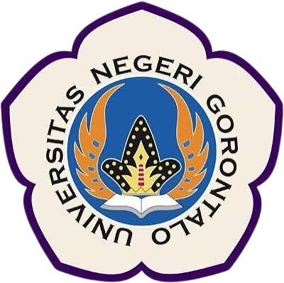

Jurusan Teknik Elektro dan Komputer didirikan sebagai bagian dari Fakultas Teknik Universitas Negeri Gorontalo, dan terus berkembang menjawab kebutuhan pendidikan tinggi teknik di wilayah Sulawesi dan Indonesia Timur.
Jurusan Teknik Elektro UNG dibentuk pada tahun 2001 sebagai bagian dari pengembangan Fakultas Teknik. Program Studi Teknik Elektro (S1) merupakan program pertama yang dibuka, dengan tujuan memenuhi kebutuhan tenaga teknis kelistrikan dan telekomunikasi di kawasan Indonesia Timur.
Seiring meningkatnya kebutuhan akan teknologi informasi dan pendidikan vokasional, Jurusan kemudian membuka Program Studi Teknik Komputer dan Program Studi Pendidikan Vokasional Rekayasa Elektro, sehingga total mengelola tiga program studi sarjana.
Sejak 2024, Jurusan menjalankan kurikulum berbasis OBE (Outcome-Based Education) untuk S1 Teknik Elektro dan S1 Teknik Komputer, sementara S1 Pendidikan Vokasional Rekayasa Elektro mengadopsi kerangka KKNI yang berorientasi pada kompetensi pendidik vokasional.
| Periode | Nama |
|---|---|
| 2001–2005 | (data arsip) |
| 2024–sekarang | Yasin Mohamad, ST., MT. |
Visi dan misi yang menjadi arah pengembangan Jurusan, program studi, dan seluruh civitas akademika.
Dilandasi semangat "unggul" dalam mutu lulusan, "berkarakter" dalam integritas akademik, dan "berdaya saing" dalam kontribusi keilmuan di tingkat nasional dan internasional.
Susunan kepemimpinan Jurusan Teknik Elektro dan Komputer periode 2024 – sekarang.
Tenaga pendidik berpengalaman dengan keahlian spesifik di bidangnya. Data berikut bersumber dari sistem akademik internal Jurusan.